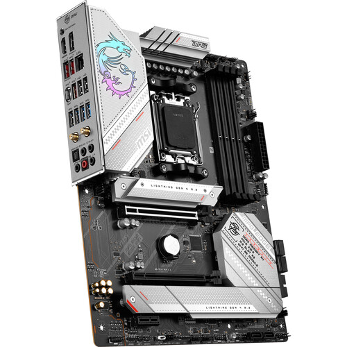

The motherboard connects all hardware components and allows communication between them. It determines compatibility between CPU, RAM, and storage.
The power supply unit (PSU) provides electricity to every component. A reliable PSU ensures stable performance and protects the system.

Source: TeamViewer